생산자동화산업기사 (2015-05-31 기출문제)
1과목: 기계가공법 및 안전관리
1. 밀링 머신에서 절삭속도 20m/min, 페이스커터의 날수 8개, 직경 120mm, 1날당 이송 0.2mm일 때 테이블 이송속도는?
- 약 65mm/min
- 약 75mm/min
- 약 85mm/min
- 약 95mm/min
(정답률: 73%)

2. 일반적으로 방전가공 작업시 사용되는 가공액의 종류 중 가장 거리가 먼 것은?
- 변압기유
- 경유
- 등유
- 휘발유
(정답률: 84%)
3. 비교 측정에 사용되는 측정기가 아닌 것은?
- 다이얼 게이지
- 버니어 캘리퍼스
- 공기 마이크로미터
- 전기 마이크로미터
(정답률: 76%)
4. 수공구를 사용할 때 안전수칙 중 거리가 먼 것은?
- 스패너를 너트에 완전히 끼워서 뒤쪽으로 민다.
- 멍키렌치는 아래턱(이동 jaw) 방향으로 돌린다.
- 스패너를 연결하거나 파이프를 끼워서 사용하면 안 된다.
- 멍키렌츠는 웜과 랙의 마모에 유의하고 물림상태 확인 후 사용한다.
(정답률: 74%)
5. 사인 바(Sine bar)의 호칭 치수는 무엇으로 표시하는가?
- 롤러 사이의 중심거리
- 사인 바의 전장
- 사인 바의 중량
- 롤러의 직경
(정답률: 75%)
6. 절삭 날 부분을 특정한 형상으로 만들어 복잡한 면을 갖는 공작물의 표면을 한 번에 가공하는데 적합한 밀링 커터는?
- 총형 커터
- 엔드 밀
- 앵귤러 커터
- 플레인 커터
(정답률: 72%)
7. 연삭숫돌의 원통도 불량에 대한 주된 원인가 대책으로 옳게 짝지어진 것은?
- 연삭숫돌의 눈 메움 : 연삭숫돌의 교체
- 연삭숫돌의 흔들림 : 센터 구멍의 홈 조정
- 연삭숫돌의 입도가 거침 : 굵은 입도의 연삭숫돌 사용
- 테이블 운동의 정도 불량 : 정도검사, 수리, 미끄럼 면의 윤활을 양호하게 할 것
(정답률: 68%)
8. 일반적으로 직경(외경)을 측정하는 공구로써 가장 거리가 먼 것은?
- 강철자
- 그루브 마이크로미터
- 버니어 캘리퍼스
- 지시 마이크로미터
(정답률: 67%)
9. 다음 센터구멍의 종류로 옳은 것은?
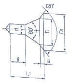
- A형
- B형
- C형
- D형
(정답률: 74%)
10. 기계가공법에서 리밍 작업시 가장 옳은 방법은?
- 드릴 작업과 같은 속도와 이송으로 한다.
- 드릴 작업보다 고속에서 작업하고 이송을 작게 한다.
- 드릴 작업보다 저속에서 작업하고 이송을 크게 한다.
- 드릴 작업보다 이송만 작게하고 같은 속도로 작업한다.
(정답률: 61%)
11. 절삭제의 사용 목적과 거리가 먼 것은?
- 공구의 온도상승 저하
- 가공물의 정밀도 저하 방지
- 공구수명 연장
- 절삭 저항의 증가
(정답률: 89%)
12. 선반가공에서 ø100×400인 SM45C소재를 절삭 깊이 3mm, 이송속도를 0.2mm/rev, 주축 회전수를 400rpm으로 1회 가공할 때, 가공 소요시간은 약 몇 분인가?
- 2
- 3
- 5
- 7
(정답률: 59%)
13. 마찰면이 넓은 부분 또는 시동횟수가 많을 때 사용하고 저속 및 중속 축의 급유에 사용되는 급유방법은?
- 담금 급유법
- 패드 급유법
- 적하 급유법
- 강제 급유법
(정답률: 65%)
14. 견고하고 금긋기에 적당하며, 비교적 대형으로 영점 조정이 불가능한 하이트 게이지로 옳은 것은?
- HT형
- HB형
- HM형
- HC형
(정답률: 66%)
15. 절삭공구를 연삭하는 공구연삭기의 종류가 아닌 것은?
- 센터리스 연삭기
- 초경공구 연삭기
- 드릴 연삭기
- 만능공구 연삭기
(정답률: 71%)
16. 선반의 주축을 중공축으로 한 이유로 틀린 것은?
- 굽힘과 비틀림 응력의 강화를 위하여
- 긴 가공물 고정이 편리하게 하기 위하여
- 지름이 큰 재료의 테이퍼를 깎기 위하여
- 무게를 감소하여 베어링에 작용하는 하중을 줄이기 위하여
(정답률: 55%)
17. 호브(hob)를 사용하여 기어를 절삭하는 기계로써, 차동 기구를 갖고 있는 공작기계는?
- 레이디얼 드릴링 머신
- 호닝 머신
- 자동 선반
- 호빙 머신
(정답률: 83%)
18. 탁상 연삭기 덮개의 노출각도에서, 숫돌 주축 수평면 위로 이루는 원주의 최대 각은?
- 45°
- 65°
- 90°
- 120°
(정답률: 50%)
19. 다음과 같이 표시된 연삭숫돌에 대한 설명으로 옳은 것은?
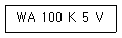
- 녹색 탄화규소 입자이다.
- 고운눈 입도에 해당된다.
- 결합도가 극히 경하다.
- 메탈 결합제를 사용했다.
(정답률: 66%)
20. 척에 고정할 수 없으며 불규칙하거나 대형 또는 복잡한 가공물을 고정할 때 사용하는 선반 부속품은?
- 면판(face plate)
- 멘드릴(mandrel)
- 방진구(work rest)
- 돌리게(dog)
(정답률: 80%)
2과목: 기계제도 및 기초공학
21. 스케치도에 관한 설명으로 틀린 것은?
- 측정한 치수를 기입한다.
- 프리핸드로 그린다.
- 재질 및 가공법은 기입할 필요가 없다.
- 제작도로 대신 사용하기도 한다.
(정답률: 85%)
22. 가공 방법에 따른 KS 가공 방법 기호가 바르게 연결된 것은?
- 방전 가공 : SPED
- 전해 가공 : SPU
- 전해 연삭 : SPEC
- 초음파 가공 : SPLB
(정답률: 60%)
23. 도면에 굵은 선의 굵기를 0.5mm로 하였다. 가는 선과 아주 굵은 선의 굵기로 가장 적합한 것은? (순서대로 가는선, 아주 굵은 선)
- 0.18mm, 0.7mm
- 0.25mm, 1mm
- 0.35mm, 0.7mm
- 0.35mm, 1mm
(정답률: 83%)
24. 다음 중 표면의 결을 도시할 때 제거가공을 허용하지 않는다는 것을 지시한 것은?
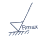
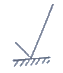
(정답률: 81%)
25. 핸들이나 바퀴 등의 암 및 림, 리브 등 절단선의 연장선 위에 90° 회전하여 실선으로 그리는 단면도는?
- 온 단면도
- 한쪽 단면도
- 조합 단면도
- 회전도시 단면도
(정답률: 87%)
26. 도면에서 다음 종류의 선이 같은 장소에 겹치게 될 경우 가장 우선순위가 높은 것은?
- 중심선
- 무게 중심선
- 절단선
- 치수 보조선
(정답률: 81%)
27. 제3각 투상법으로 제도한 보기의 평면도와 좌측면도에 가장 적합한 정면도는?
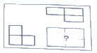
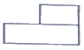
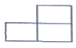
(정답률: 85%)
28. 끼워맞춤 공차 ø50H7/g6에 대한 설명으로 틀린 것은?
- ø50H7의 구멍과 ø50g6축의 끼워맞춤이다.
- 축과 구멍의 호칭 치수는 모두 ø50이다.
- 구멍 기준식 끼워 맞춤이다.
- 중간 끼워 맞춤의 형태이다.
(정답률: 75%)
29. 나사의 표시가 다음과 같이 명기되었을 때 이에 대한 설명으로 틀린 것은?
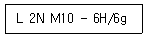
- 나사의 감김방향은 오른쪽이다.
- 나사의 종류는 미터나사이다.
- 암나사 등급은 6H, 수나사 등급은 6g이다.
- 2줄 나사이며 나사의 바깥지름은 10mm 이다.
(정답률: 85%)
30. 다음 도면에서 기하공차에 관한 설명으로 가장 적합한 것은?
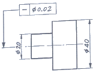
- ø20부분만 원통도가 ø0.02범위 내에 있어야 한다.
- ø20과 ø40부분의 원통도가 ø0.02범위 내에 있어야 한다.
- ø20과 ø40부분의 진직도가 ø0.02범위 내에 있어야 한다.
- ø20부분만 진직도가 ø0.02범위 내에 있어야 한다.
(정답률: 74%)
31. 아래 그림과 같이 물체를 중간에 고정시키고 점 P에 힘 F를 작용하면 이 물체의 모멘트의 크기 M은? (단, 고정점에서 작용선까지의 거리는 d이다.)
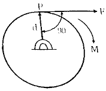
- M=F/d
- M=d/F
- M=Fd
- M=2Fd
(정답률: 82%)
32. 정지하고 있는 물체에 100N의 힘을 가해 4초 만에 40m/s의 속도로 운동한다면, 이 때 물체의 질량[kg]은?
- 0.1
- 10
- 20
- 30
(정답률: 78%)
33. 250kgf의 인장하중을 받는 봉에 40kgf/mm2의 인장응력이 발생하는 경우 안전하게 사용할 수 있는 봉의 지름[mm]은? (단, 안전율은 4이다.)
- 3
- 4
- 5
- 6
(정답률: 44%)
34. t초 동안에 전하량 Q(C)의 전하가 전선의 단면을 통과하였을 때 흐르는 전류(A)는?
- t×Q
- t/Q
- Q/t
- t(1+Q)
(정답률: 76%)
35. 다음 중 상온에서의 저항온도 계수가 가장 큰 것은?
- Cu
- Fe
- W
- Ni
(정답률: 64%)
36. 파스칼의 원리(Pascal’s principle)에 대한 설명으로 옳지 않은 것은?
- 유체면에 작용하는 각 점의 압력의 크기는 모든 방향으로 균일하게 작용한다.
- 힘은 피스톤의 압력에 반비례해서 작용한다.
- 유체면에 작용하는 압력은 면에 대해 수직방향으로 작용한다.
- 파스칼의 원리를 이용하면 수압기를 만드는 것이 가능하다.
(정답률: 76%)
37. 오른손에 10kgf의 힘을 가하여 원형 핸들을 돌릴 때 발생한 토크가 5kgf·m이었다면 이 핸들의 반경은?
- 0.5m
- 1m
- 2m
- 5m
(정답률: 62%)
38. 직류 전위차의 용도가 아닌 것은?
- 직류전압, 전류측정
- 절연 및 접지저항 측정
- 전압계, 전류계 보정시험
- 전력측정 및 전력계 보정시험
(정답률: 70%)
39. 지름이 50m에서 40m로 축소되는 원형 관로에 물이 가득 채워져 흐르고 있다. 지름 50m 관에서 유속이 1.2m/s라고 하면 지름 40m관에서의 유속[m/s]은 약 얼마인가?
- 1.88
- 1.5
- 0.96
- 0.48
(정답률: 49%)
40. 아래 정육각형의 넓이는 약 얼마인가? (단, a의 길이는 65mm이다.)
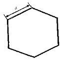
- 10967mm2
- 10977mm2
- 10987mm2
- 10997mm2
(정답률: 70%)
3과목: 자동제어
41. 미리 정해 놓은 순서에 따라 제어의 각 단계를 차례차례 진행시키는 제어는?
- 추종 제어
- 최적 제어
- 시퀀스 제어
- 피드 포워드 제어
(정답률: 89%)
42. 그림과 같은 PLC 래더 다이어그램의 최소 실행 스텝수는?
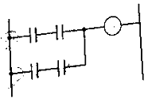
- 2
- 4
- 6
- 8
(정답률: 78%)
43. PLC 입력부에서 신호에 포함된 노이즈가 PLC 내부장치로 전달되지 않도록 하기 위해 채택되는 회로요소로 맞는 것은?
- CPU
- 퓨즈
- 트라이악
- 포토커플러
(정답률: 67%)
44. 다음 중에서 C언어의 비조건 흐름제어문에 해당되지 않는 것은?
- break
- if-else
- goto
- return
(정답률: 77%)
45. 10t5을 라플라스 변환한 것으로 옳은 것은?
- 1200/s6
- 120/s6
- 24/s6
- 6/s6
(정답률: 69%)
46. 전기동력장치에 비교한 유압동력장치의 특징이 아닌 것은?
- 과부하가 걸릴 경우 불안정적이다.
- 고속회전운동을 얻기는 어렵다.
- 안정적으로 큰 힘을 얻을 수 있다.
- 힘의 증폭이 용이하다.
(정답률: 59%)
47. 다음 중 물체의 위치, 방위, 자세 등의 기계적 변위를 제어량으로 하여 목표값의 임의의 변화에 추종하도록 구성된 제어계로 가장 적합한 것은?
- 서보 기구
- 자동 조정
- 프로그램 제어
- 프로세스 제어
(정답률: 90%)
48. 유공압 제어요소와 일의 성격과의 짝으로 맞지 않는 것은?
- 압력제어 밸브 : 일의 크기 제어
- 유량제어 밸브 : 일의 빠르기 제어
- 방향제어 밸브 : 일의 방향 제어
- 유압작동기 : 일의 세기 제어
(정답률: 72%)
49. 여러 종류의 품목을 소량 생산하는 공장에서 가공부품의 형태가 변동되거나 또는 가공수량이 변화하여도 그것에 가장 유연히 대응할 수 있는 생산시스템은?
- CNC
- DNC
- FMS
- SNC
(정답률: 68%)
50. off-set을 소멸시키고 잔류편차가 적으나 발산 가능성이 있는 제어기는?
- 비례제어기
- 비례적분제어기
- 비례미분제어기
- 비례적분미분제어기
(정답률: 65%)
51. 아래 조건의 시스템에서 실린더를 300mm 전진한 위치에서 정지를 시키려면 피드백 되는 리니어 포텐셔미터의 신호전압[V]은?
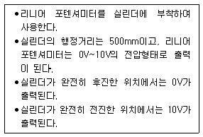
- 3
- 4
- 5
- 6
(정답률: 58%)
52. 되먹임 제어(feed back control)의 특징이 아닌 것은?
- 목표값에 정확히 도달하기 쉽다.
- 순차적으로 제어과정이 진행된다.
- 제어계가 복잡하고 비용이 비싸다.
- 외부 조건의 변화에 영향을 줄일 수 있다.
(정답률: 71%)
53. 자동제어에서 전기식 조절기의 특성이 아닌 것은?
- 크기가 작다.
- 동작 실현성이 쉽다.
- 신호전송이 빠르고 쉽다.
- 스파크에 대한 방폭에 유의할 필요가 없다.
(정답률: 84%)
54. 두 아날로그 신호의 차이를 구할 때 사용되는 증폭기는?
- .전력증폭기
- 차동증폭기
- 완충증폭기
- 직렬증폭기
(정답률: 87%)
55. 자동 조타장치의 키는 항해하려는 방위를 설정하려는 것으로 소형 서보기구를 통해 배의 방위 캠퍼스를 피드백 받는데, 배의 방위 캠퍼스에 의해 측정된 값(θ2)이 30°, 배의 키 값(θ1)이 60°가 입력된다면 서부기구의 목표값(θ)으로 옳은 것은?
- 30°
- 90°
- -30°
- -90°
(정답률: 53%)
56. 그림과 같은 블록선도의 전달함수는 어떤 요소를 표현한 것인가?
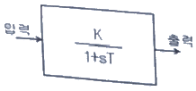
- 비례요소
- 미분요소
- 적분요소
- 1차 지연요소
(정답률: 86%)
57. 기기의 보호나 작업자의 안전을 위해 기기의 동작 상태를 나타내는 접점을 사용하여 관련된 기기의 동작을 금지하는 회로는?
- 자기유지회로
- 오프 딜레이 회로
- 인터록 회로
- 타이머 회로
(정답률: 89%)
58. 함수 f(t)=te-t의 라플라스(Laplace) 변환을 구한 것은?
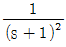
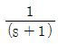
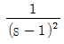
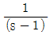
(정답률: 63%)
59. 아래 제어블록선도의 입출력비(전달함수)는?
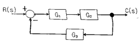
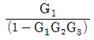
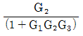
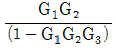
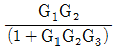
(정답률: 75%)
60. 입력 펄스에 비례하여 회전각을 낼 수 있어 디지털 제어가 용이한 특성을 가진 모터는?
- DC모터
- 유도모터
- 스테핑 모터
- 브러시리스 모터
(정답률: 83%)
4과목: 메카트로닉스
61. 선반으로 직경 50mm의 탄소강을 노즈반경 0.4mm인 초경바이트로 절삭속도 150mm/min 및 이송속도 0.1mm/rev로 가공할 때 이론적 표면 거칠기는 약 몇 m인가?
- 0.78
- 1.25
- 3.13
- 4.45
(정답률: 45%)
62. 아래 진리표에 해당하는 논리회로는?
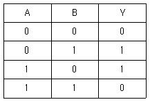
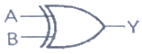
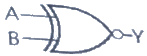
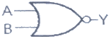
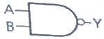
(정답률: 66%)
63. 다음 중 가장 높은 온도에서 사용되는 열전쌍은?
- 철 – 콘스탄탄
- 구리 – 콘스탄탄
- 그로멜 – 알루멘
- 백금로듐 – 백금
(정답률: 74%)
64. 스테핑 모터의 구동 방법과 가장 거리가 먼 것은?
- 런핑 구동
- 쵸퍼구동
- 과전압 구동
- 병렬저항 구동
(정답률: 59%)
65. 자속밀도의 단위는?
- m/s
- Wb/m2
- AT/m
- AT
(정답률: 68%)
66. 입 · 출력 시스템의 구성 요소가 아닌 것은?
- 데이터 전송로
- 인터페이스 회로
- 연산 제어 시스템
- 입 · 출력 제어회로
(정답률: 63%)
67. 물체가 지정된 위치에 있는가, 힘이 가해져 있는가 등의 여부를 검출하는데 사용되는 스위치는?
- 액면 스위치
- 근접 스위치
- 리밋 스위치
- 광 스위치
(정답률: 77%)
68. 초음파 센서의 설명으로 틀린 것은?
- 파장이 수밀리~수십밀리이다.
- 수중에서 공기보다 전파속도가 느리다.
- 어군 탐지기에 사용된다.
- 온도에 대한 보정이 필요하다.
(정답률: 75%)
69. 어셈블러에 대한 설명으로 옳은 것은?
- 어셈블러 언어로 된 프로그램을 기계어로 번역하는 프로그램이다.
- 기계어로 된 프로그램을 어셈블러 언어로 된 프로그램으로 바꾸는 프로그램이다.
- 고급 수준의 언어를 어셈블러 언어로 된 프로그램으로 바꾸는 프로그램이다.
- 어셈블러 언어로 된 프로그램을 기계어로 번역하는 하드웨어 장치이다.
(정답률: 60%)
70. PLC에서 전체 프로그램을 1회 실행하는데 소요되는 시간은?
- 로디
- 스텝수
- 스캔타임
- 처리속도
(정답률: 82%)
71. 스테핑모터의 특성에 해당되지 않는 것은?
- 위치결정 제어에 용이하다.
- 고속, 고 토크를 얻을 수 있다.
- 마이컴 등의 디지털 기기와 조합이 용이하다.
- 구동제어 회로는 입력펄스 미 주파수에 의해 제어된다.
(정답률: 56%)
72. 10진수 77일 2진수로 표시한 것은?
- 1001101(2)
- 1101101(2)
- 111001(2)
- 1001111(2)
(정답률: 81%)
73. TTL IC의 출력으로 사용되지 않는 방식은?
- 토템폴(totem pole) 출력
- 사이리스터(thyristor) 출력
- 오픈컬렉터(open collector) 출력
- 3상(3-state) 출력
(정답률: 51%)
74. 복합가공으로 공정을 줄인 가공의 효과가 아닌 것은?
- 절삭저항이 증가하고 공구수명이 짧아졌다.
- 공장의 설비비 및 바닥면적을 줄였다.
- 지그 제작비용이 절감되었다.
- 준비시간, 공정 간의 대기시간을 줄였다.
(정답률: 81%)
75. 위치 결정의 불확정성과 고속 동작에서 감속기의 강성이 약한 것을 개선하기 위해 감속기 등의 동력 전달부품을 사용하지 않고, 로봇 암에 직접 모터를 부착하여 움직이는 모터는?
- AC 서보모터
- DC 서보모터
- 리니어 서보모터
- 다이렉트 드라이브 서보모터
(정답률: 80%)
76. 코일에 전류가 흘러 그 양단에 역기전력을 일으킬 때의 전류의 방향과 기전력의 방향에 관계되는 법칙은?
- 렌쯔의 법칙
- 주울의 법칙
- 쿨롱의 법칙
- 암페어의 법칙
(정답률: 68%)
77. 다음 op amp회로는 어떤 회로인가?
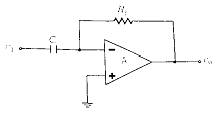
- 적분기
- 가산기
- 증폭기
- 미분기
(정답률: 63%)
78. 100V, 60Hz의 교류 회로에서 용량 리액턴스 Xc=5Ω일 때 이 회로에 흐르는 전류[A]는?
- 10
- 20
- 30
- 40
(정답률: 71%)
79. PC(프로그램카운터)에 대한 설명으로 틀린 것은?
- 프로그램이 어디까지 실행되었는지를 계수하는 일종의 카운터이다.
- PC는 그 내용이 어드레스 버퍼로 전송된 직후 자동적으로 1씩 증가한다.
- 소프트웨어 명령에 의해서 PC의 내용이 불연속적으로 변할 수 있다.
- 산술 및 논리 연산용 레지스터로 이용될 수 있다.
(정답률: 44%)
80. 아래 그림과 같은 형태의 PLC 프로그램 언어는?
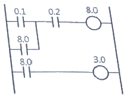
- Statement list
- Ladder diagram
- Function Block Diagram
- Sequential Function CHart
(정답률: 87%)
이송속도 = 절단속도 ÷ (페이스커터의 날수 x 1회전에 자르고 이동하는 거리)
= 20m/min ÷ (8 x 0.3784m)
= 약 85mm/min
따라서 정답은 "약 85mm/min"이다.